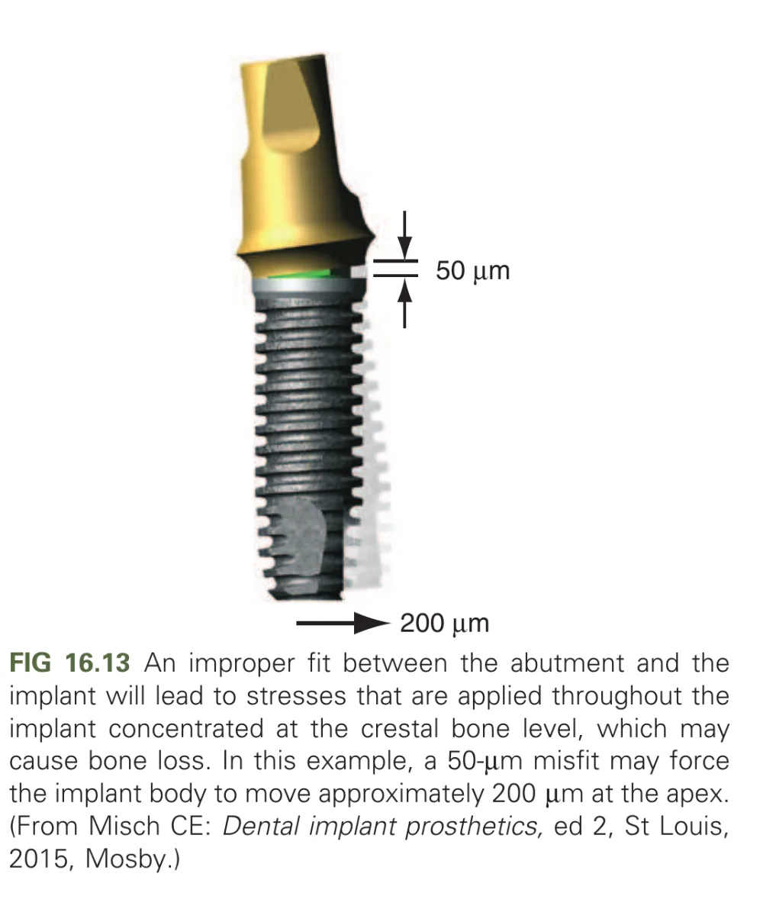

نسخه استخراجشده؛ ترجمه یا تأیید علمی انجام نشده است. وضعیت: captured
کادر ۱۶٫۱ چهارده نیروی خارجی را میشمارد که شل شدن پیچ را افزایش میدهند:
۱) پارافانکشن، ۲) فضای ارتفاع تاج، ۳) دینامیک عضلات جونده، ۴) موقعیت در قوس (قدامی، میانی، خلفی)، ۵) قوس مقابل، ۶) کانتیلورها، ۷) بارهای زاویهدار، ۸) طراحیهای ضعیف اکلوزالی، ۹) نبود موقعیتهای کلیدی ایمپلنت (کانین و مولر اول)، ۱۰) شمار ناکافی ایمپلنت (بدون سه پونتیک مجاور)، ۱۱) پروتزهای غیرپسیو، ۱۲) تورک ناکافی پیچ، ۱۳) تورک بیش از حد پیچ، ۱۴) تکنیک نادرست جاگذاری پروتز.
به موارد ۱۲ و ۱۳ دقت کن — اینها در فهرست کنار هم نشستهاند و ظاهراً متناقضاند: هم کم بستن و هم زیاد بستن، هر دو شل شدن میسازند. این یعنی تورک یک پنجره است نه یک جهت. در درس ۴ میبینی که سازوکارشان کاملاً متفاوت است: کمتورکی نیروی گیرهای ناکافی میدهد، و پرتورکی تغییر شکل دائمی پیچ میسازد.
و اکنون مهمترین عامل — پارافانکشن:
«از میان همهی نیروهای خارجی که شل شدن پیچ ایجاد میکنند، عامل اصلی مربوط به پارافانکشن است.»
و سازوکار سهگانهاش: یک بیمار برایکسر افقی، تاج ایمپلنت را مکرراً با یک نیروی زاویهدار بار میکند. این بزرگی نیرو، چرخههای تا شکست خستگی، و زاویهی نیرویی که برش را بر رابط میگذارد — هر سه را افزایش میدهد. و نتیجه: «شکست پرسلن و سیل سمان و شل شدن یا شکست پیچ، اجتنابناپذیر است.»
و یک توصیهی بالینی ظریف که کمتر دیده میشود:
«وقتی دندانهای طبیعی مجاور نسبت به نیروهای جانبی یا زاویهدار متحرکاند، ایمپلنت رِیجید و تاج ایمپلنت ممکن است اورلود شوند. یک تنظیم اکلوزال با نیروی گاز سنگین — که اجازه میدهد دندانهای مجاور پیش از تماس تاج ایمپلنت حرکت کنند — برای کاهش ریسک اورلود توصیه میشود.»
این یک نکتهی طلایی است: ایمپلنت حرکت نمیکند ولی دندان میکند؛ پس اگر تماسها را در نیروی سبک تنظیم کنی، در نیروی سنگین دندانها فرو میروند و تمام بار روی ایمپلنت میماند. تنظیم باید در نیروی سنگین انجام شود.
کانتیلور و فضای ارتفاع تاج:
«یکی از شایعترین عوامل اتیولوژیک که به شل شدن پیچ میانجامد، نیروهای اکلوزالی پیوستهی بیش از حد است» — و شایعترین نمونهاش، پروتزهایی با تماسهای اکلوزالی نادرست.
و رابطهی کانتیلور: «رابطهی مستقیمی میان طول کانتیلور و نیروی واردشده بر پروتز وجود دارد.» و کانتیلورها به بارهای اکلوزالی ناهموار میانجامند؛ بارهای ناهموار چرخههای مکرر فشار و سپس کشش و برش در اجزای ایمپلنت ایجاد میکنند.
و چرا پیچ بهویژه آسیبپذیر است: «پیچها بهویژه در برابر نیروهای کششی و برشی آسیبپذیرند» — و هر دو با کانتیلور یا بارهای زاویهدار بهشدت افزایش مییابند. و جملهی مکانیکی کلیدی: «چون پیچ یک سطح شیبدار است، ارتعاش پیوسته باعث باز شدن رزوهاش میشود.»
و فضای ارتفاع تاج: وقتی CHS افزایشیافته وجود دارد (نسبت تاج به ایمپلنت ضعیف)، نیروی بیشتری بر پیچ وارد میشود. مطالعهای نشان داد نیروی واردشده بر پیچ مستقیماً به ارتفاع تاج مربوط است.
و توصیفی که ارزش حفظ کردن دارد: «ارتفاع تاج مانند یک کانتیلور عمودی عمل میکند که نیرو را بر پیچ اباتمنت بزرگ میکند.» — همان مفهومی که در یونیت ۴٫۴ برای اوردنچر با عدد «دو برابر ارتفاع، ۲۰۰ درصد نیرو» دیدی، اینجا برای پروتز ثابت تکرار میشود.
عامل یازدهم فهرست — پروتز غیرپسیو — سزاوار یک بخش جداگانه است.
«شل شدن پیچ و ترمیمهای نیمهجداشده، عوارض شایع ریختهگریهای غیرپسیو هستند.» و همین قاعده را وارونه هم میشود گفت: «هرچه فیت روی اباتمنت پسیوتر و نیروهای اکلوزالی کنترلشدهتر، پروتز ایمنتر.»
و سازوکار: «نیروهای فشاری و کششی مکرر از ریختهگریهای غیرپسیو زیر بارهای اکلوزالی، ارتعاش و شل شدن اجزای پیچ ایجاد میکنند.»
و اکنون خطرناکترین جملهی این اسلاید: «تحریف سوپراستراکچر و سیستم ایمپلنت ممکن است به سطحی برسد که یک شکاف اولیهی ۵۰۰ میکرومتری قابل تشخیص نباشد. در نتیجه، ریختهگری ممکن است به نظر برسد که روی اباتمنت مینشیند.»
یعنی چه؟ نیم میلیمتر شکاف — که با چشم و رادیوگرافی باید آشکار باشد — میتواند با خم شدن خودِ سازه هنگام بستن پیچ پنهان شود. پروتز «جا افتاده» به نظر میرسد، ولی آن جا افتادن با ذخیره کردن نیرو در سیستم خریداری شده است.
و آن نیروی ذخیرهشده کجا میرود؟ «سوپراستراکچر، استخوان و اجزا فراتر از حد الاستیک خود خم نمیشوند، و نیروهای فشاری، کششی و برشی بر رابط استخوان-ایمپلنت گذاشته میشوند. استخوان باید ریمادل کند تا این نیروها را حذف کند. اگر نیروها فراتر از حدود فیزیولوژیک یا استحکام نهایی باشند، تحلیل رابط استخوان-ایمپلنت رخ میدهد.»
و نتیجه: «تحلیل بیشتر استخوان کرستال با ریختهگریهای غیرپسیو مرتبط دانسته شده است.»
و یک عدد که مقیاس مسئله را نشان میدهد (شکل ۱۶٫۱۳):
«یک عدمانطباق ۵۰ میکرومتری ممکن است بدنهی ایمپلنت را وادار کند در آپکس تقریباً ۲۰۰ میکرومتر حرکت کند.» — یک خطای پنجاهمیکرونی در کرست، به یک حرکت چهار برابری در آپکس تبدیل میشود. این همان اثر اهرمی است، ولی این بار در جهت عمودی سازه.
و دو سازوکار زمانمند: خزش (Creep) — یک نیروی ثابت که در طول زمان بر یک ماده اعمال میشود — یا خستگی، هر دو میتوانند به شکست اجزا در طول زمان بینجامند، بهدلیل بار ثابت یا فرکانس بار چرخهای.
و چرا پیچشونده دشوارتر است: «ترمیمهای پیچشوندهی پسیو، ساختشان دشوارتر از ترمیمهای سمانی پسیو است. وقتی پیچ در جای خود رزوه میشود، سوپراستراکچر ممکن است تحریف شود، ایمپلنت ممکن است درون استخوان حرکت کند، یا پیچ اباتمنت ممکن است تحریف شود.»
و سرانجام، موقعیت آناتومیک — که یک وارونگی جالب دارد:
یک مطالعه تفاوت معناداری بر پایهی موقعیت آناتومیک نشان داد (همهی انواع اتصال با هم):
اما وقتی تنها ایمپلنتهای با اتصال داخلی بررسی شدند، الگو وارونه شد: شیوع بیشتر شل شدن پیچ در ناحیهی خلفی (۴٫۳ درصد) نسبت به ناحیهی قدامی (۰٫۷ درصد).
چرا این مهم است؟ چون نشان میدهد «کدام ناحیه پرخطرتر است» پاسخ واحدی ندارد — به نوع اتصال بستگی دارد. در کل نمونه قدام پرخطرتر بود؛ در ایمپلنتهای اتصال داخلی، خلف. و در درس بعد میبینی که تفاوت اتصال خارجی و داخلی، اعداد شیوع را چند برابر جابهجا میکند.
و پیشگیری از کجا شروع میشود؟ نخست منبع نیروی بیش از حد بر سیستم ایمپلنت را پیدا کن، سپس طرح درمان را تغییر بده. در طراحی پروتز: ایمپلنت در موقعیتهای کلیدی، حذف یا کاهش کانتیلور بهویژه وقتی نیروی اکلوزالی بالاست، و اصول محافظت از ایمپلنت — کاهش شیب کاسپ (ارتفاع کمتر کاسپ)، کاهش میز اکلوزال، و نبود تماسهای جانبی بهویژه در خلف. و در ساخت: دقت طراحی و ساخت سوپراستراکچر فلزی، عامل تعیینکنندهی کاهش نیرو در رابط اباتمنت و رابط استخوان-ایمپلنت است.
